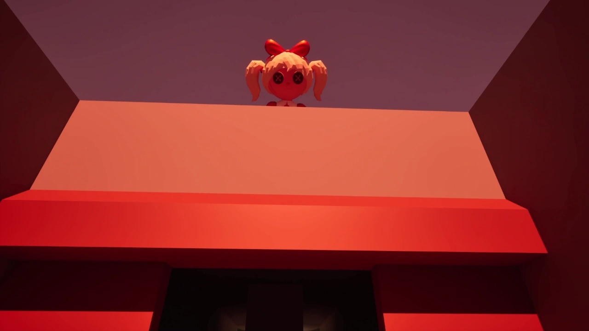

Tab 02
Research
Selected Research
-
01

Neural Entrainment Child-Friendly EEG Adaptation
Research questionHow can child-friendly visual cycles, artificial-language speech, and EEG event markers remain synchronized during audiovisual learning experiments?
- EEG
- Statistical Learning
- PsychoPy
- Experimental Design
- Visual Stimuli
-
02

BeforeHello Communication Support for Autistic Adults
Research questionHow can a personalized introduction tool support autistic adults before first meetings, and what usability needs emerge from think-aloud feedback?
- Autism
- HCI
- User Testing
- Research Software
-
03

At Play in the Cosmos — Interactive Star Chart. Herder & Rau (2022), Frontiers in Education, CC BY. 3D Astronomy Game-Based Learning Study
Research questionWhere do learners get lost, spatially and conceptually, while learning astronomy inside a 3D game?
- Game-Based Learning
- STEM Education
- Observation
- UX Research
-
04

Boston Bilingual Pioneer Media Applied Learning-Product Project
FocusHow can learning material become something a learner acts on, across 3D lessons, university courseware, a character companion, and conversation-practice tools?
- AI-Supported Learning
- Educational Games
- Interactive Systems
- Companion Design
-
05

Threshold Player Experience Research for a Graduate Capstone Game
FocusHow first-time players interpret scanner signals, progress feedback and horror cues in a first-person anomaly game: an exploratory mixed-methods playtest of the Milestone C prototype.
- Player Experience Research
- Mixed-Methods Research
- Playtesting
- PXI